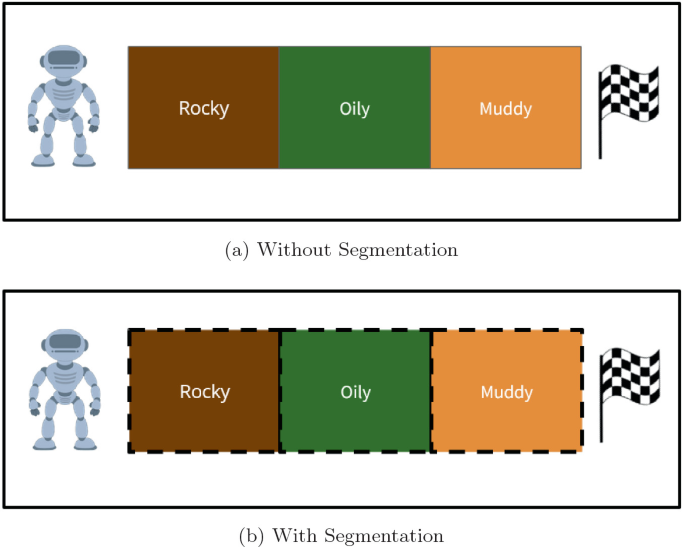
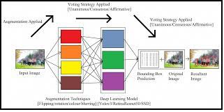
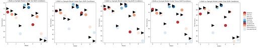
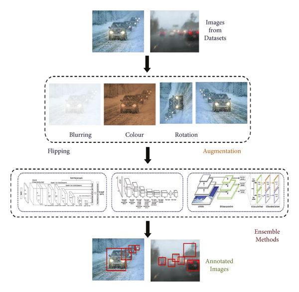
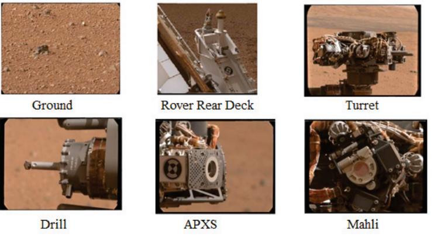

|
Aboli Marathe I am a graduate student at CMU in Machine Learning Department, where I work on computer vision and learn about convex optimization. Pursuing my Masters in Machine Learning. At NVIDIA I've worked on RAPIDS bootcamp material. I did my BE in Computer Engineering at PICT, where I performed research in perception for autonomous vehicles. I've received the IEEE Richard E. Merwin Scholarship and am a Taekwondo Black Belt. In recent years I've had the honor of working with (and learning from) some incredible people including Dr. Ketan Kotecha, Dr. Rahee Walambe and all my research collaborators. I am actively looking for job opportunities in ML starting 2023, so if you have something interesting in mind, please reach out! Email / CV / Google Scholar / Twitter / Github |

|
ResearchI'm interested in computer vision, machine learning, generative artificial intelligence, and autonomous vehicles. Much of my research is about robust perception and extracting insights from aerial imagery. Representative papers are highlighted. |

|
WEDGE: A multi-weather autonomous driving dataset built from generative vision-language models.
Aboli Marathe, Deva Ramanan, Rahee Walambe, Ketan Kotecha CVPR, 2023 (Oral and Poster Presentation at Vision Datasets Understanding) project page / proceedings / arXiv Synthetic dataset of autonomous driving scenes by generative vision-language models. |
|
|
RestoreX-AI: A Contrastive Approach Towards Guiding Image Restoration via Explainable AI Systems.
Aboli Marathe, Pushkar Jain, Rahee Walambe, Ketan Kotecha CVPR, 2022 (Oral Presentation at Vision For All Seasons) proceedings / arXiv Propose a contrastive approach towards mitigating generated object detection (OD) data corruptions, by evaluating images generated by restoration models during and post training. |
|

|
Segmented ε-Greedy for Solving a Redesigned Multi-arm Bandit Environment
A Shankar, M Diwan, Aboli Marathe, M Takalikar ADCIS, 2022 (Oral Presentation) proceedings Proposed a policy- —segmented ε -Greedy—that allows the agent to pass through the environment while maximizing its returns along the way. |
|

|
Evaluating the performance of ensemble methods and voting strategies for dense 2D pedestrian detection in the wild
Aboli Marathe, Rahee Walambe, Ketan Kotecha ICCV, 2021 (Oral Presentation at Affective Behaviour Analysis in the Wild) proceedings In this work, we demonstrate the effectiveness of a lightweight ensemble architecture for pedestrian detection in the wild, which combines detectors and data augmentation techniques to improve the performance of well-established detectors |
|

|
t-RAIN: Robust generalization under weather-aliasing label shift attacks
Aboli Marathe, S Prabhu CVPR, 2023 (Oral and Poster Presentation at Affective Behaviour Analysis in the Wild) proceedings / arXiv We propose t-RAIN a similarity mapping technique for synthetic data augmentation using large scale generative models and evaluate the performance on DAWN dataset. This mapping boosts model test accuracy by 2.1, 4.4, 1.9, 2.7 % in no-shift, fog, snow, dust shifts respectively. |

|
Multiscale object detection from drone imagery using ensemble transfer learning
Rahee Walambe, Aboli Marathe, Ketan Kotecha Drones, 2021 (Editor's Choice Article) journal Present an implementation of ensemble transfer learning to enhance the performance of the base models for multiscale object detection in drone imagery. |
|

|
Lightweight object detection ensemble framework for autonomous vehicles in challenging weather conditions
Rahee Walambe, Aboli Marathe, Ketan Kotecha, George Ghinea Hindawi Computational Intelligence and Neuroscience Special Issue Compression of Deep Learning Models for Resource-Constrained Devices, 2021 journal Ensembling multiple baseline deep learning models under different voting strategies for object detection and utilizing data augmentation to boost the models’ performance is proposed to solve this problem. |
|

|
Mars Imagery Classification: A Galactic Battle between Knowledge Transfer Networks and their Dual-Attention Armed Adversaries
Geetanjali Kale, Anupam Patil, Pushkar Jain, Sameer Memon, Aniket Kulkarni, Aboli Marathe IEEE 7th International conference for Convergence in Technology (I2CT), 2022 (Oral Presentation) proceedings In this work, we compare the performance of dual attention networks, interplanetary transfer learning methods and Vision transformers in classifying objects in images collected by the Mars Science Laboratory Curiosity rover from August 2012 to July 2015. |
Miscellanea |

|
The pictures (not photographs/paper icons) on this website are AI-generated images created using Midjourney. The source code for this website is based on the template provided by Jon Barron's source code. |